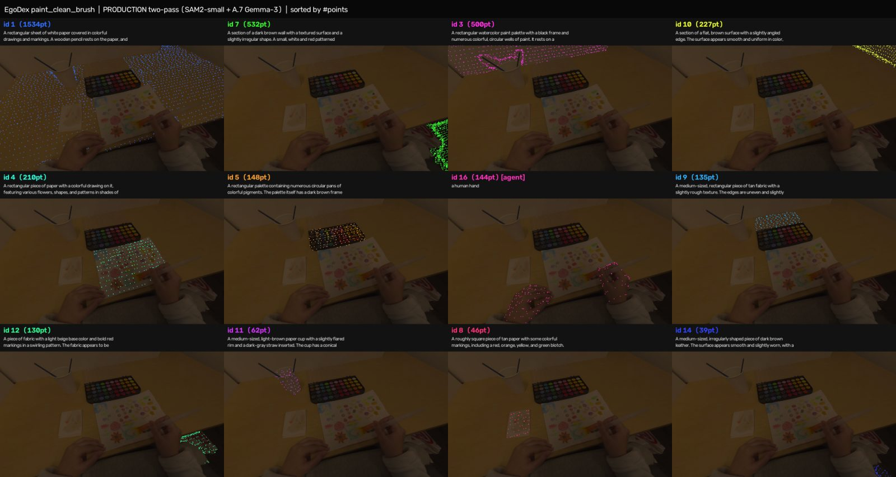
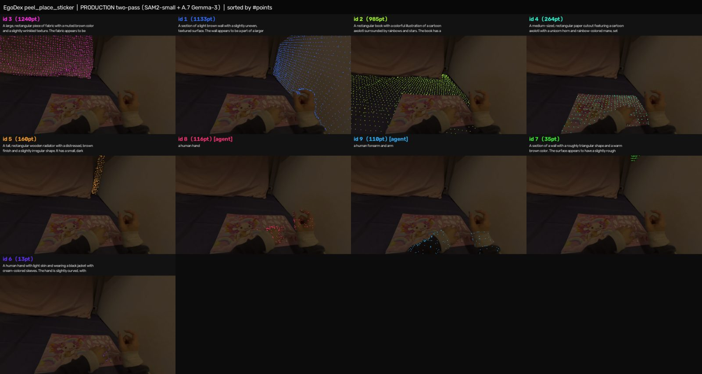
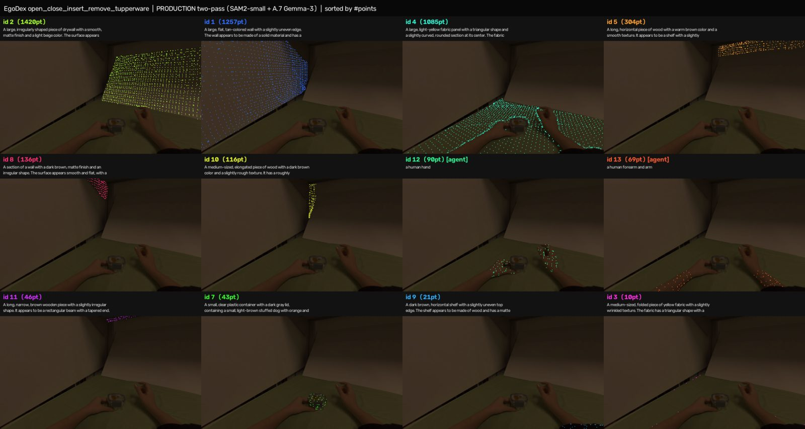
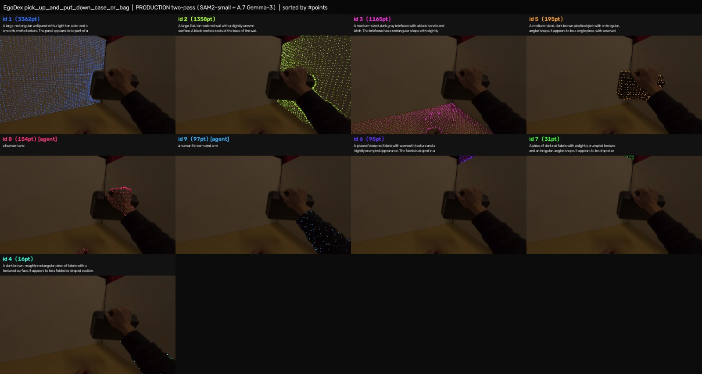
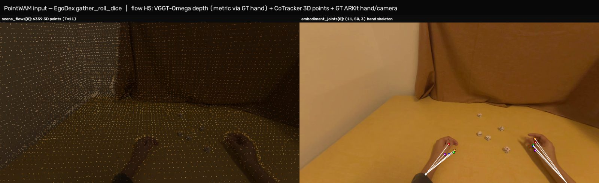
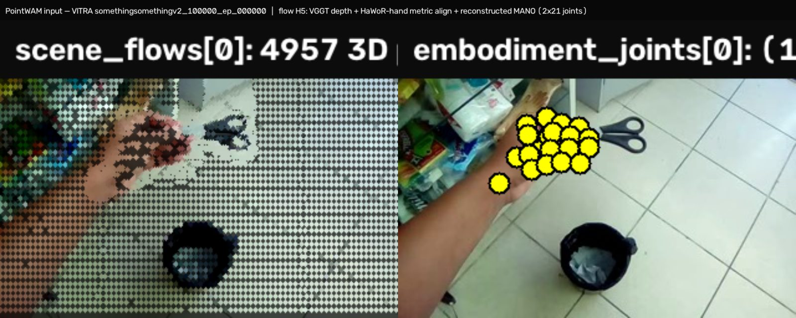

013D encoder — EgoDex maskcap sidecars
One sidecar per episode, non-destructive (keyed to the flow H5 of the same name). Every 3D point carries an instance id; every instance carries a caption and its SigLIP2 embedding — the Mosaic3D/SpaceFormer training-pair format.
| Part | Path | Episodes | Coverage | Size | caption_style |
|---|---|---|---|---|---|
| part1 | maskcap_pilot/egodex/ | 44,507 | 100% | ~5.6 GB | v3 (Qwen) |
| part2 | maskcap_pilot/egodex_part2/ | 94,052 | 100% | ~8.2 GB | v3 (Qwen) |
| part3 | maskcap_pilot/egodex_part3/ | 48,527 | 95.5% | ~6.4 GB | mixed v3 / A.7 Gemma |
| part4 | maskcap_pilot/egodex_part4/ | 18,439 | 45.0% | ~3.4 GB | A.7 Gemma-3 |
| total | — | 205,525 | 63.4% of 324,167 | ~23.6 GB | — |
| part5 · extra · test | egodex_part5 / _extra / _test | 0 / 93,824 queued | — | — | A.7 Gemma-3 (planned) |
Prefix all paths with /virtual_lab/sjw_alinlab/beomjun/. Sampled content statistics: 18.1 / 6.5 / 11.9 / 12.5 clips per episode (parts 1–4), 26–42 global instances per episode, 26–35 captioned, 90–94% of points labeled, SigLIP2 rows non-zero for every captioned instance.
Schema
| Key | Shape / type | Meaning |
|---|---|---|
| <clip>/camera_0_instance_id | (N,) uint16 | per-point episode-global instance id; 0 = unlabeled. N matches camera_0_scene_flows of the same clip in the flow H5. |
| global_siglip2 | (G, 1152) f16 | row g-1 = SigLIP2 text embedding of instance g's caption — the encoder target |
| attr global_captions | JSON {id: str} | one caption per instance ("" if beyond the caption budget) |
| attr global_is_agent | JSON {id: bool} | true = human hand / forearm (template caption, VLM bypassed) |
| attr global_view_clips | JSON {id: [clip]} | clips the instance appears in (cross-clip merged) |
| attr caption_style | str | sf_gemma3_pass2_v1 = SpaceFormer-A.7 Gemma-3; absent = Qwen v3 |
Samples
Per-instance grids: each tile isolates one instance's 3D points over a dimmed anchor frame, with its caption. Tiles sorted by #points.




More samples, the pipeline description and its known failure modes: SpaceFormer data engine log.
02PointWAM — EgoDex + VITRA flow H5s
The action-side corpus: metric 3D scene points tracked through time plus the hand skeleton, per 11-step clip. Fully available — nothing pending.
| Source | Path | Episodes | Size | clips/ep | Hand joints | Sanity |
|---|---|---|---|---|---|---|
| EgoDex part1 | flows/flow_part1_pw/ | 44,507 | ~523 GB | ~19 | (11,50,3) ARKit GT | 4/4 ok |
| EgoDex part2 | flows/flow_part2_pw/ | 94,052 | ~623 GB | 3.5 | (11,50,3) | 4/4 ok |
| EgoDex part3 | flows/flow_part3_pw/ | 50,799 | ~667 GB | 6.5 | (11,50,3) | 4/4 ok |
| EgoDex part4 | flows/flow_part4_pw/ | 40,985 | ~511 GB | 8.0 | (11,50,3) | 4/4 ok |
| EgoDex part5 | flows/flow_part5_pw/ | 70,655 | ~330 GB | 8.2 | (11,50,3) | 4/4 ok |
| EgoDex extra | flows/flow_extra_pw/ | 20,065 | ~464 GB | 22.2 | (11,50,3) | 4/4 ok |
| EgoDex test | flows/flow_test_pw/ | 3,104 | ~53 GB | 7.8 | (11,50,3) | 4/4 ok |
| EgoDex total | — | 324,167 | ~3.1 TB | — | GT (ARKit) | 28/28 |
| VITRA | vitra_1m/flows/ (2,712 files) | ~822,640 | ~2.8 TB | 3.3 | (11,2,21,3) MANO recon | 3/3 |
Sizes are estimated from a 40-file random sample per directory (no du — it hammers the NFS). Prefix: /virtual_lab/sjw_alinlab/beomjun/.
Schema (per clip group, keys named start:end)
| Key | Shape | Meaning |
|---|---|---|
| camera_0_scene_flows | (11, N, 3) f32 | N tracked 3D points in world metres, one row per timestep — index i is the same physical point at every t (CoTracker3 correspondence). N ≈ 2.3k (VITRA 240p) to 10k (EgoDex). |
| camera_0_scene_colors | (N, 3) uint8 | RGB per point |
| camera_0_extrinsic | (4,4) f32 | cam→world for the clip anchor |
| camera_0_initial_rgb | JPEG bytes | anchor frame |
| embodiment_joints | EgoDex (11,50,3) · VITRA (11,2,21,3) | hand joints in world metres per timestep. EgoDex = ARKit GT (wrist+finger chain; the 12-kp dex view is indices [0,24,5,15,20,10] ×2 hands). VITRA = reconstructed MANO, 21 joints × 2 hands. |
| camera_0_robot_valid | (11,12) uint8 | EgoDex only — idle-hand mask; select keypoints by this, never by magnitude |
| intrinsic | (3,3) | VITRA: per-episode group. EgoDex: use the full-res ARKit K [[736.63,0,960],[0,736.63,540],[0,0,1]] — the file-level intrinsic is tracking-resolution and will squash your projection. |
Samples

scene_flows[0] projected with its own colours; right: embodiment_joints[0] (wrist + 5 fingertips per hand, ARKit GT). Metric scale comes from fitting VGGT-Omega depth to the GT hand depths per chunk.
03How to load
Sidecar and flow H5 share the filename and the clip keys, so the join is by name.
import h5py, json, numpy as np
ep = "gather_roll_dice__1234"
flow = f"/virtual_lab/sjw_alinlab/beomjun/flows/flow_part3_pw/{ep}.h5"
side = f"/virtual_lab/sjw_alinlab/beomjun/maskcap_pilot/egodex_part3/{ep}.h5"
with h5py.File(flow) as f, h5py.File(side) as s:
caps = json.loads(s.attrs["global_captions"]) # {instance_id: caption}
agent = json.loads(s.attrs["global_is_agent"])
emb = s["global_siglip2"][:] # (G, 1152) encoder target
for ck in [k for k in f.keys() if ":" in k]:
pts = f[ck]["camera_0_scene_flows"][:] # (11, N, 3) world metres
hand = f[ck]["embodiment_joints"][:] # (11, 50, 3) ARKit GT
ids = s[ck]["camera_0_instance_id"][:] # (N,) uint16 -> caps / emb
# encoder pair: pts[0][ids == g] <-> emb[g-1]
# action pair: pts (scene) + hand (label), 11 steps @ ~10 Hz- ·Encoder training.Use
ids > 0points; target =emb[id-1]. Drop or down-weightglobal_is_agentinstances if you want an object-only encoder. Filter oncaption_stylefor a single-captioner subset. - ·Action training.Clips are 11 steps at ~10 Hz (stride 2 of the 20 Hz source). Select hand keypoints via
camera_0_robot_valid; 6 of the 12 dex slots are placeholders in single-hand tasks. - ·Mixing EgoDex + VITRA.Same contract, different hand representation (50 ARKit vs 2×21 MANO) and resolution (1080p vs 240p). VITRA hand poses are reconstructed, so treat them as weaker labels for regression.
04Sanity check — what was verified
Random samples per directory, today. Report: maskcap_pilot/sanity_report.json · script maskcap_pilot/sanity_check.py.
- ✓Sidecars 32/32 valid.Clip groups present,
global_siglip2present, max instance id ≤ SigLIP2 rows, embeddings non-zero for every captioned instance, 90–94% of points labeled. - ✓Flow H5 31/31 valid.All 7 EgoDex parts + VITRA:
scene_flows,extrinsic,initial_rgb,embodiment_jointspresent with the expected shapes. - ·Known, by design.Caption style is mixed across parts (v3 Qwen vs A.7 Gemma-3) — the per-file attribute records which. Instances beyond the per-episode caption budget carry an empty caption and a zero embedding row; skip them by
caps[id] != "". - ·Growing.Encoder sidecars land at ~2,000 episodes/hour (two-pass fleet). EgoDex 100% is the near-term milestone; VITRA sidecars start after it.